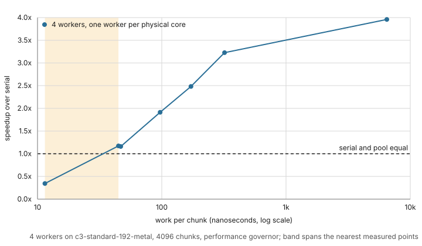
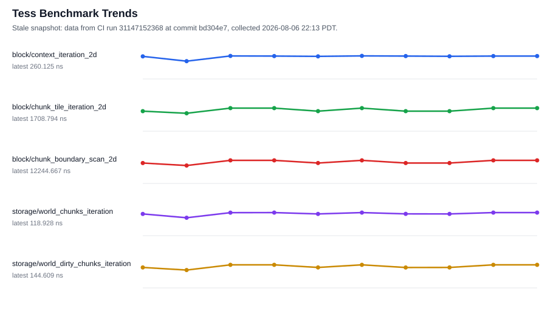

Performance
tess is performance-first: production benchmark families are gated in CI with
calibrated per-benchmark ceilings. Exploratory lab/ families and controlled
hardware campaigns are recorded separately and do not become portable gates
without machine-specific calibration.
For paired A*, route-cache, batch, and distance-field workloads, start with the C++ grid pathfinding benchmark comparison.
Representative single-threaded medians from the benchmark suite:
| Workload | Median |
|---|---|
| A* across an open 512x512 grid, corner to corner (1,022 steps, 1,023 nodes expanded) | 2.21 us |
| The weighted variant of the same query | 2.66 us |
| One clean tick of 100 path agents with retained routes | 354 ns |
One weighted_path_batch plan of 100 near-goal requests on a 512x512 grid |
53.6 us |
| CPU | Apple M3 Max |
| Toolchain | Apple Clang 21.0.0, bench-only preset (Release) |
| Commit | 6b0f3c22cb66 |
| Method | 15 repetitions, 0.5 s minimum per repetition |
| Quality | CV 0.69-0.76%; work counters identical across repetitions |
| Measured | 2026-08-27, developer workstation under light load |
These are one machine's numbers, not portable ceilings. The CI gates use per-benchmark thresholds calibrated on their own runners, and the handheld baseline below is a separate campaign.
Memory, not time, but enforced the same way: examples/sparse_stream.cc
self-checks a 1,024-chunk world held to a 16-page residency budget — 64x
less resident field storage than the dense equivalent (1 MiB vs 16 KiB
of page data; residency metadata is budgeted separately).
When the worker pool is worth it
The parallel phase executor is not free: dispatching a phase costs about the same as a chunk of trivial work. Whether the pool beats the serial executor is decided almost entirely by how much work each chunk does, not by how many chunks there are.

At four workers, on the machine below:
- Above roughly 45 ns of work per chunk the pool wins, and keeps winning as the work grows — 1.2x at 45 ns, 1.9x at 97 ns, and 4.0x for a compute-bound chunk.
- At roughly 12 ns per chunk it loses badly: a one-tile-per-chunk phase runs about 3x slower through the pool than serially.
- The crossover is bracketed, not pinned. The nearest measured points either side are 11.5 ns, which loses, and 44.8 ns, which wins; nothing between them was measured, and nothing below 11.5 ns was measured at all.
A practical starting point: if a chunk does more than about 50 ns of work, use the pool. You can read your own figure off a serial run — total phase time divided by chunk count — then measure.
Design against the upper figure. The lower one is a single measured point rather than a boundary, and where the crossover sits at other worker counts was not measured in this campaign.
Scope. These are figures from one machine under controlled conditions, not portable constants.
| CPU | Intel Xeon Platinum 8481C, 2 sockets x 48 cores x 2 threads |
| Topology | 4 NUMA nodes, 105 MiB L3 per socket |
| Instance | c3-standard-192-metal |
| Clock | performance governor, turbo enabled |
| Memory policy | numactl --interleave=all |
| Pinning | one worker per physical core, plus a CPU for the dispatcher |
| World | 4096 chunks of 64x64 tiles |
| Method | 20 repetitions per point; speedup against SerialPhaseExecutor measured in the same process under the same pinning |
| Measured | 2026-08-04, one campaign |
The governor and the memory policy matter as much as the CPU: without them the same code on the same machine measures differently, which is why they are stated rather than assumed. Two-worker results are withheld: they are too noisy in campaign conditions to state. Beyond about 24 workers the measurements are too noisy to publish at all — see the optimization log for the full campaign record, including what these numbers do not show.
Steam Deck baseline
A controlled campaign on a Steam Deck established a handheld baseline at
commit 4a919fbd99a2. It is a platform characterization, not a comparison
against another revision and not a new CI threshold calibration.
Representative main-suite medians:
| Workload | Median wall time |
|---|---|
| Clean tick, 100 unit-path agents | 0.78 us |
| World-edit tick, 100 unit-path agents | 1.33 ms |
| Dirty shared state, 100 weighted agents | 8.63 ms |
| Goal churn, 100 weighted agents | 44.28 ms |
| Chunk compute, serial | 1.86 ms |
| Chunk compute, four-worker pool | 0.49 ms |
The isolated goal-churn case exceeds a 16.7 ms frame budget; the shared-dirty case does not. These are library workloads, not complete game-frame times.
The pinned scaling sweep shows why worker count must follow granularity:
| Workload | 2 workers | 4 workers | 8 logical CPUs |
|---|---|---|---|
| Tile touch | 0.58x | 0.70x | 0.86x |
| Chunk fill | 1.36x | 1.48x | 1.43x |
| Chunk compute | 1.96x | 3.42x | 5.97x |
Four workers, one per physical core, are the conservative starting point for mixed game work. Using all eight SMT threads helps the compute-heavy case but slightly regresses chunk fill after its four-core peak. Trivial tile-touch work does not amortize dispatch at any measured width.
| CPU | AMD Custom APU 0932, 4 cores x 2 threads |
| Toolchain | Clang 19.1.7 in the pinned steamrt4 SDK |
| Power | External power, performance governor |
| Pinning | Distinct physical cores through width 4; all logical CPUs at 8 |
| Method | 10 repetitions for full suites; 20 per scaling point |
| Quality | Main CV 0.20% median, 1.58% p95; no benchmark errors |
| Thermal | Reported thermal readings at or below 66 C |
| Measured | 2026-08-06, one campaign |
All eight fields PMU runs produced numeric cycles, instructions, cache misses,
branch misses, and matching iteration records. Their IPC ranged from 3.06 to
4.34. Raw perf stat process totals include startup and must be normalized by
the paired iteration count; they are attribution evidence, not portable
per-operation thresholds. Two manual-time cache-maintenance cases reached
11.7% and 20.3% CV and need repetition before supporting small-difference
claims. The optimization log contains the complete
campaign record and scaling caveats.
Trend snapshot
Data from CI run 31147152368 at commit bd304e7, collected 2026-08-06
22:13 PDT. It is a point-in-time snapshot, not a live view: it is
regenerated on the triggers listed in CONTRIBUTING.md,
so between regenerations it lags main by however many commits have landed
since.

| Benchmark | Latest median CPU ns |
|---|---|
block/context_iteration_2d |
260.125 |
block/chunk_tile_iteration_2d |
1708.794 |
block/chunk_boundary_scan_2d |
12244.667 |
storage/world_chunks_iteration |
118.928 |
storage/world_dirty_chunks_iteration |
144.609 |
CI collects baseline artifacts on every main run; these medians come from
those artifacts. Individual optimization experiments, rejected ideas, and
deferred performance work are recorded in the
optimization log; threshold calibration methodology is
recorded in the calibration history. The regeneration
workflow for this page lives in CONTRIBUTING.md.